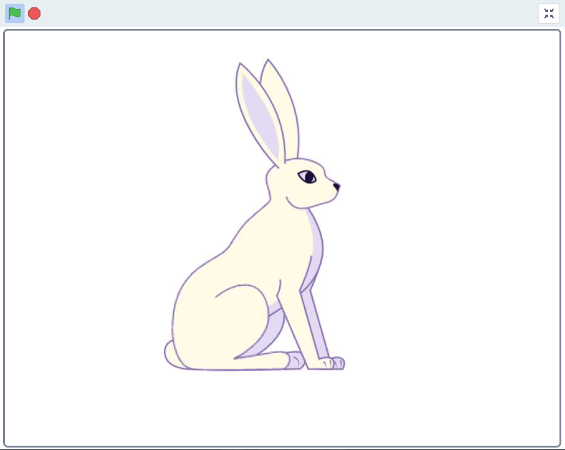
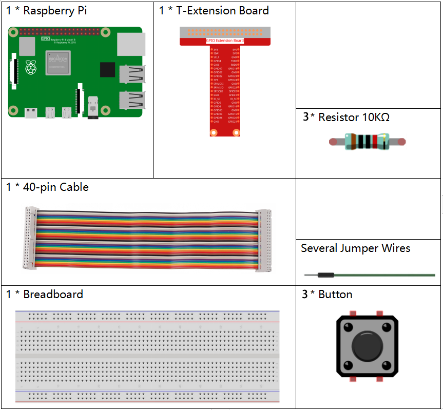
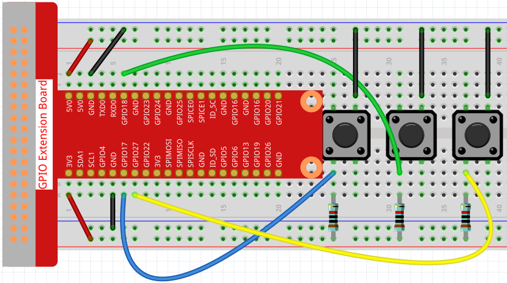
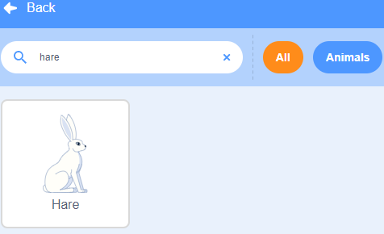
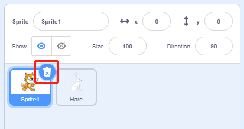
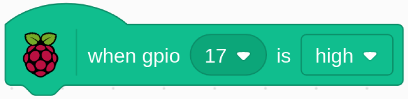
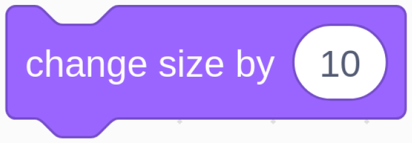

Bemerkung
Hallo und willkommen in der SunFounder Raspberry Pi & Arduino & ESP32 Enthusiasten-Gemeinschaft auf Facebook! Tauchen Sie tiefer ein in die Welt von Raspberry Pi, Arduino und ESP32 mit anderen Enthusiasten.
Warum beitreten?
Expertenunterstützung: Lösen Sie Nachverkaufsprobleme und technische Herausforderungen mit Hilfe unserer Gemeinschaft und unseres Teams.
Lernen & Teilen: Tauschen Sie Tipps und Anleitungen aus, um Ihre Fähigkeiten zu verbessern.
Exklusive Vorschauen: Erhalten Sie frühzeitigen Zugang zu neuen Produktankündigungen und exklusiven Einblicken.
Spezialrabatte: Genießen Sie exklusive Rabatte auf unsere neuesten Produkte.
Festliche Aktionen und Gewinnspiele: Nehmen Sie an Gewinnspielen und Feiertagsaktionen teil.
üëâ Sind Sie bereit, mit uns zu erkunden und zu erschaffen? Klicken Sie auf [hier] und treten Sie heute bei!
1.4 Hase
Heute werden wir Button, Raspberry Pi und Scratch verwenden, um einen Hasen mit verschiedenen Veränderungen zu erstellen!
Wenn wir den ersten Knopf drücken, ändert der Hase im Bühnenbereich seine Körperfarbe; wenn wir den zweiten Knopf drücken, ändert der Hase seine Körpergröße; wenn wir den dritten Knopf drücken, macht der Hase einen Schritt nach vorne.
Erforderliche Komponenten
Bauen Sie den Stromkreis auf
Laden Sie den Code und sehen Sie, was passiert
Lade die Code-Datei (1.4_hare.sb3) in Scratch 3.
Jetzt kannst du versuchen, jeden der 3 Knöpfe zu drücken, um zu sehen, wie sich der Hase auf der Bühne verändert.
Tipps zu Figur
Klicken Sie auf die Schaltfläche Choose a Sprite in der unteren rechten Ecke des Sprite-Bereichs, geben Sie Hare in das Suchfeld ein, und klicken Sie dann, um es hinzuzufügen.
Löschen Sie Figur1.
Tipps zu Codes
{kind=link}
Dies ist ein Ereignisblock, der ausgelöst wird, wenn der Pegel von GPIO17 hoch ist, was bedeutet, dass die Taste zu diesem Zeitpunkt gedrückt wird.

Dies ist ein Block, um die Farbe von Hare zu ändern, der Bereich des Wertes ist 0 ~ 199, über 199 wird wieder von 0 geändert.
{kind=link}
Dies ist ein Block, der verwendet wird, um die Größe für das Sprite zu ändern. Je höher der Wert, desto größer das Sprite.
Bemerkung
Das Sprite ist auch nicht unendlich groß, und seine maximale Größe hängt von der Größe des Originalbildes ab.
{kind=link}
Dies ist ein Block, der die Kostüme der Sprites wechselt. Wenn Hare sein Kostüm wechselt, führt er eine Reihe von kohärenten Aktionen aus. In diesem Projekt soll Hare zum Beispiel einen Schritt nach vorne machen.